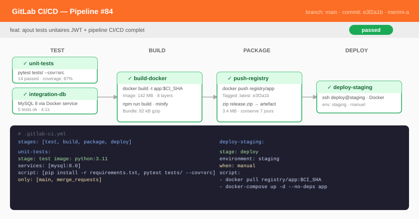

Adressage & VLAN
Plans IPv4, masques, sous-réseaux, domaines de diffusion séparés.
Pilier 04
Une API rigoureuse sur un serveur mal configuré ne protège rien.
Dans un réseau à plat où toute machine parle à toutes les autres, le meilleur code du monde ne change rien. Comprendre la couche du dessous change la façon dont on écrit celle du dessus.
Architecture
Segmenter. Filtrer entre les segments. Ne jamais exposer la base.
Aucun flux autorisé tant qu'il n'est pas justifié. On ouvre, on ne ferme pas.
Le serveur de données n'accepte que la zone applicative.
Une compromission publique ne donne pas accès aux données.
Étude technique
Le service dont tout dépend, et que presque personne ne surveille.
Étude du fonctionnement du protocole, de ses failles structurelles et des réponses existantes. Présentée à l'oral.
Injecter une réponse falsifiée dans le cache d'un résolveur, pour rediriger silencieusement tout un réseau vers un serveur contrôlé.
Une requête minuscule provoque une réponse volumineuse. En usurpant l'adresse source, l'attaquant transforme des résolveurs ouverts en artillerie contre sa cible.
Le DNS sort de presque tous les réseaux, y compris ceux qui bloquent tout le reste. Encoder des données dans des sous-domaines en fait un canal de sortie discret — c'est le point que je trouve le plus intéressant, parce qu'il n'est pas un défaut du protocole mais de la confiance qu'on lui accorde.
DNSSEC signe les réponses et rend la falsification détectable. DNS over HTTPS les chiffre et empêche l'observation passive — au prix de la visibilité pour l'équipe qui défend le réseau. Aucune des deux n'est gratuite.
Compétences
Plans IPv4, masques, sous-réseaux, domaines de diffusion séparés.
Routeurs, commutateurs, tables statiques, protocoles dynamiques.
Règles de filtrage, refus par défaut, ouverture explicite.
Lecture de captures paquet par paquet.
Services, permissions, scripts, journaux, durcissement.
Environnements reproductibles, images minimales, sans privilèges.
Ce qui est automatisé s'exécute toujours.
Ce qui repose sur la discipline s'oublie un vendredi soir. C'est pourquoi les contrôles de sécurité ont leur place dans la chaîne d'intégration.

Tests lancés à la main, donc irrégulièrement. Les régressions se découvraient en démonstration.
Ma chaîne s'arrêtait aux tests. J'ajouterais un audit des dépendances vulnérables et une détection de secrets, en échec bloquant.